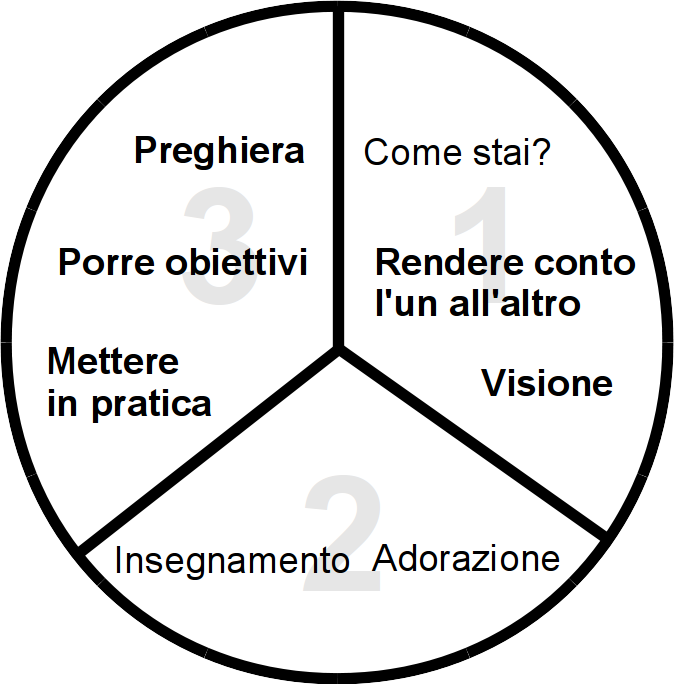

<h1>Processo in tre parti</h1>
<div style="margin-right:25px;float:left">
</div>
<p><i>Per altri dettagli su come usare il diagramma vedi TODO.</i>
</p>
<ol><li>Come stai?</li>
<li><b>Rendere conto l'un all'altro</b></li>
<li><b>Visione</b></li>
<li>Adorazione</li>
<li>Insegnamento</li>
<li><b>Mettere in pratica</b></li>
<li><b>Porre obiettivi</b></li>
<li><b>Preghiera</b></li></ol>
<p><br/>
</p><p><br/>
</p>